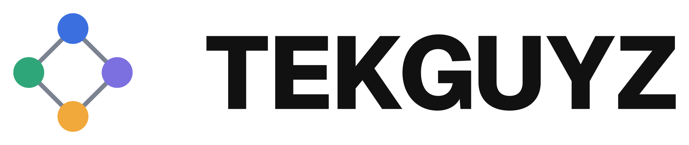

<!doctype html>
<html lang="en">
  <head>
    <meta charset="UTF-8" />
    <meta name="viewport" content="width=1200, height=900" />
    <script src="https://cdn.jsdelivr.net/npm/gsap@3.14.2/dist/gsap.min.js"></script>
    <link rel="preload" href="fonts/Geist-Bold.woff2" as="font" type="font/woff2" crossorigin />
    <style>
      /* A Google Business Profile post frame (claude-config#75). Look: tekguyz-one
         brand/playbook.md § 9. 60 px safe margin: Search and Maps crop the edges. */
      @font-face { font-family: "Geist"; src: url("fonts/Geist-Bold.woff2") format("woff2"); font-weight: 700; }
      @font-face { font-family: "Geist"; src: url("fonts/Geist-SemiBold.woff2") format("woff2"); font-weight: 600; }
      * { margin: 0; padding: 0; box-sizing: border-box; }
      html, body { margin: 0; width: 1200px; height: 900px; overflow: hidden; background: #ffffff; }
      #root { position: relative; width: 100%; height: 100%; background: #ffffff; font-family: "Geist", system-ui, sans-serif; color: #111111; }
      .scene { position: absolute; inset: 0; }
      /* Left: the headline, centered in the room above the lockup. */
      .words { position: absolute; left: 60px; top: 60px; width: 540px; height: 720px; display: flex; align-items: center; }
      .headline { font-weight: 700; font-size: var(--size, 58px); line-height: 1.08; letter-spacing: -0.03em; text-wrap: balance; }
      .lockup { position: absolute; left: 60px; bottom: 60px; height: 30px; }
      /* Right: the real capture, 390 x 620 CSS px shown at 1.25x. Never restyled. */
      .card { position: absolute; right: 60px; top: 62.5px; width: 487.5px; height: 775px; border-radius: 28px; overflow: hidden;
              border: 1px solid #e5e7eb; box-shadow: 0 24px 60px rgba(17, 17, 17, 0.12), 0 4px 14px rgba(17, 17, 17, 0.06); }
      .card img { display: block; width: 100%; height: 100%; }
    </style>
  </head>
  <body>
    <div id="root" data-composition-id="main" data-start="0" data-duration="3" data-width="1200" data-height="900">
      <!-- One clip per picture. Take each still in the middle of its second. -->
      <div id="s1" class="clip scene" data-start="0" data-duration="1" data-track-index="0"></div>
      <div id="s2" class="clip scene" data-start="1" data-duration="1" data-track-index="0"></div>
      <div id="s3" class="clip scene" data-start="2" data-duration="1" data-track-index="0"></div>
    </div>

    <script>
      // Fill these per app. Headline: a line from tekguyz-one brand/playbook.md or
      // brand/solutions.md, never new words. Shot: a phone-card capture from
      // tools/capture, copied into shots/. `size` (px) is optional, for a long line.
      const FRAMES = [
        // solutions.md § 2, row 12
        { headline: "Records a meeting and writes the notes, with no bot in the call.", shot: "shots/all-notes-phone-card-light.png" },
        // solutions.md § 2, row 7
        { headline: "AI reads the business’s records and says what matters.", shot: "shots/note-phone-card-light.png" },
        // playbook.md § 3, Smart Operations
        { headline: "Your business makes data and tasks every hour. We build systems that handle them automatically.", shot: "shots/actions-phone-card-light.png", size: 50 },
      ];

      FRAMES.forEach((f, i) => {
        const scene = document.getElementById(`s${i + 1}`);
        scene.innerHTML = `<div class="words"><h1 class="headline"></h1></div>
          
          <div class="card"></div>`;
        const h = scene.querySelector(".headline");
        h.textContent = f.headline;
        if (f.size) h.style.setProperty("--size", `${f.size}px`);
      });

      // Stills only: nothing moves. HyperFrames still needs a timeline to seek.
      const tl = gsap.timeline({ paused: true });
      tl.set({}, {}, 3);
      window.__timelines["main"] = tl;
      tl.seek(0);
    </script>
  </body>
</html>
